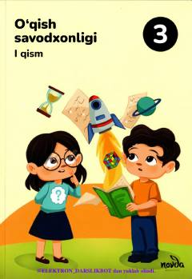

3O3-sinf o'quvchilari uchun o'qish savodxonligi darsligi.
Mazkur darslik umumiy o'rta ta'lim maktablarining 3-sinf o'quvchilari uchun mo'ljallangan bo'lib, o'qish savodxonligini oshirishga qaratilgan. Kitobdan o'zbek va jahon ertaklari, she'rlar, topishmoqlar, maqollar hamda qiziqarli matnlar o'rin olgan.